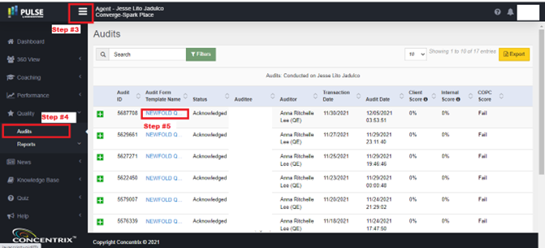
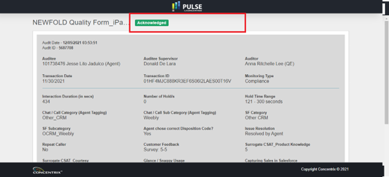

How to acknowledge Pulse Quality Audits
Created by: Jesse Lito A Jadulco
This document guides new members of the team on how to acknowledge pulse audits in compliance to the requirements
of Training and Quality Team.
- Open the link https://pulse.concentrix.com
- Log-in with your CNX email address and password
- Click the Menu if options in the left panel are not shown.
- Click Audits from Quality tab.
- Click the Audit Template to view the respective audit result.
Please see image below as reference for Step #3 - Step #5

- After you performed Step #5, you will be redirected to the Audit Report. On the top of the Audit Report,
there will be options to Acknowledge or Dispute. If the Audit Report already expired or has been
acknowledged already, the options to Acknowledge or Dispute will be no longer available.
Note: You can only
acknowledge or dispute within 48 hours after the QA has performed the Audit.
Please see below screenshot as an example of an audit successfully acknowledged. The highlighted area is
also the same area you will see the options to Acknowledge or Dispute

- Post a screenshot of your Pulse on our MS
Teams Channel